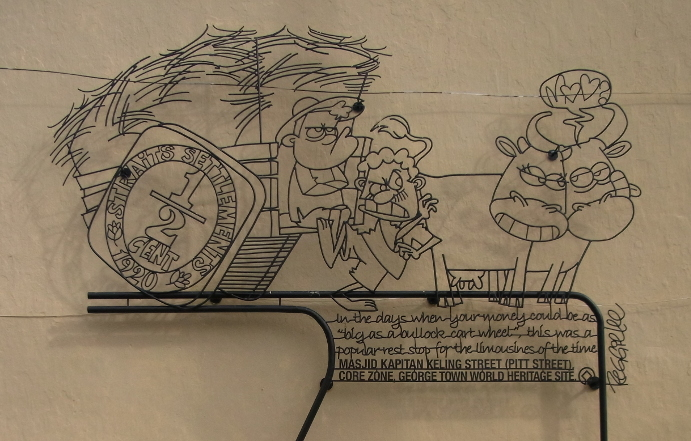
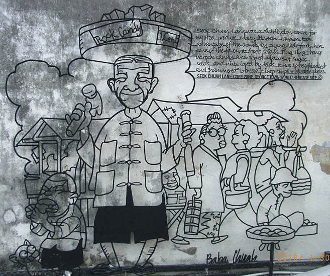
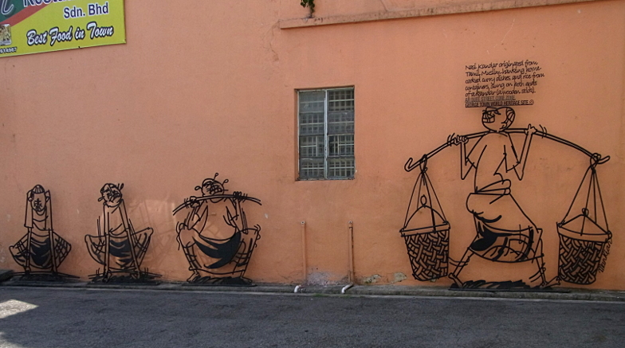

More Street Art
 |
|
| back: Street Art of George Town | My Favorite mural. (index H) |
17-19 Nov 2015, George Town, Penang, Malaysia
-------------------------------------------
Many of the sculptures displayed in George Town were the result of an international compitition held in September, 2009. In 2012, Ernest Zacharevic was commissioned to paint a few murals, and many others have come forth subequently. While the preceeding page showed art in the form of iron or glass on concrete, here the art of painting murals is added to the collection.
-------------------------------------------
|

| "Hey, watch where you're going!" |
|

|
"Waiting patiently for you." |

| This balerina is perched above an archway. |
|

|
This balcony is actually the location of three tiled shower/toilet stalls, and a wall of sinks. Showers have hot water control. Tile floors make it easy for staff to keep it sparkling clean.
My guest house on Stewart Lane. |

| Doorway street art. |
|

|
Cheating Husband "Where's my husband? The local Chinese say the richmen who lived on Muntri street kept their mistresses here, hence the name 'Ai' Cheng Hang on and on. UNESCO WORLD HERITAGE SITE, CORE ZONE©" (index 7) |

Beca "Locally known as beca', Most of the trishaw peddlers also doubled as tourist guides. CHULA STREET, CORE ZONE, GEORGE TOWN WORLD HERITAGE SITE.©" (index 30) |

_____________________________________________________________ | |
 Bullock Cat Wheel "In the days when your money could be as "big as a bullock wheel", this was a popular rest stop for the limousines of the time. MASJID KAPITAN KELING STREET (PITT STREET), CORE ZONE, GEORGE TOWN WORLD HERITAGE SITE.©" (index 6) |
_____________________________________________________________ | |
 Ting Ting Thong "Seck Chuan Lane was a distribution centre for market produce. Many itinerant hawkers took advantage of the crowds by plying their foods here. One of the favourite foods sold is ting ting thong or rock candy, a hardened mixture of sugar, seeds, and nuts loved by kids. It has to be "chiselied" and "hammered" to break it into smaller biteable pieces. SECK CHUAN LANE, CORE ZONE, GEORGE TOWN WORLD HERITAGE SITE.©" (index 12) | |
_____________________________________________________________ | |
 |
Babu Bill
Question? Contact me at the Juno.com address Dancer2SEAsia.
Have a nice day!
Special Topics: 
Jump to: More Iron rod Art